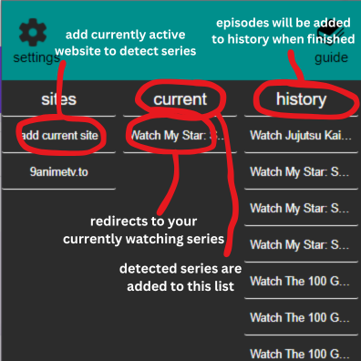
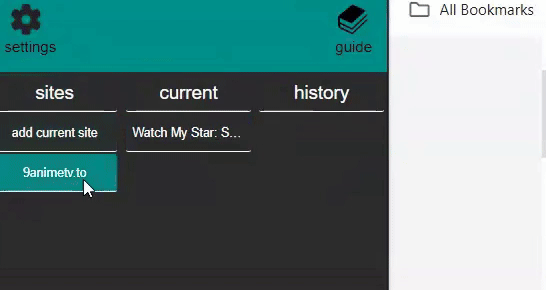

How to use
watch and detect
remove lists
note 1 : this uses tab title to track series (does not work on webpage without titles/with unusual titles)
note 2 : you have to manually remove the series after you finish the series by rightclicking it (it cant detect the last episode or when u finish it)